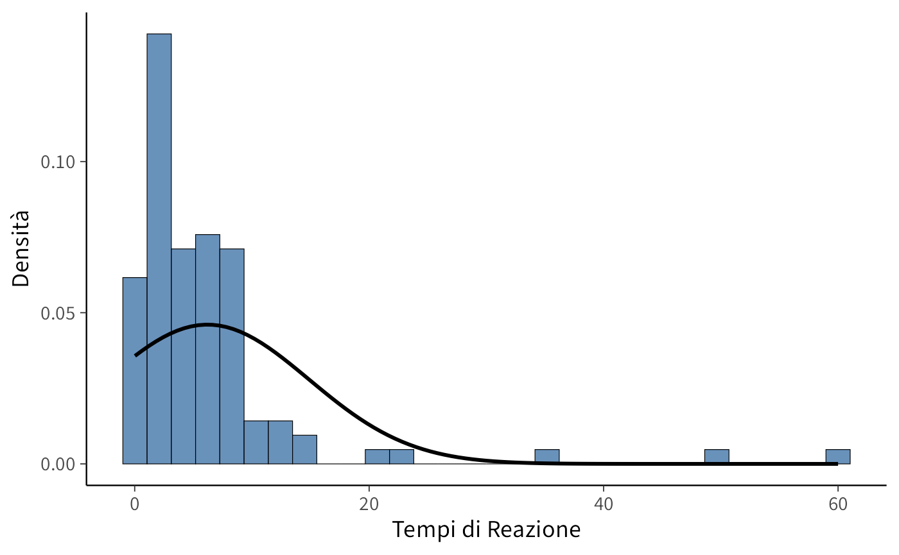
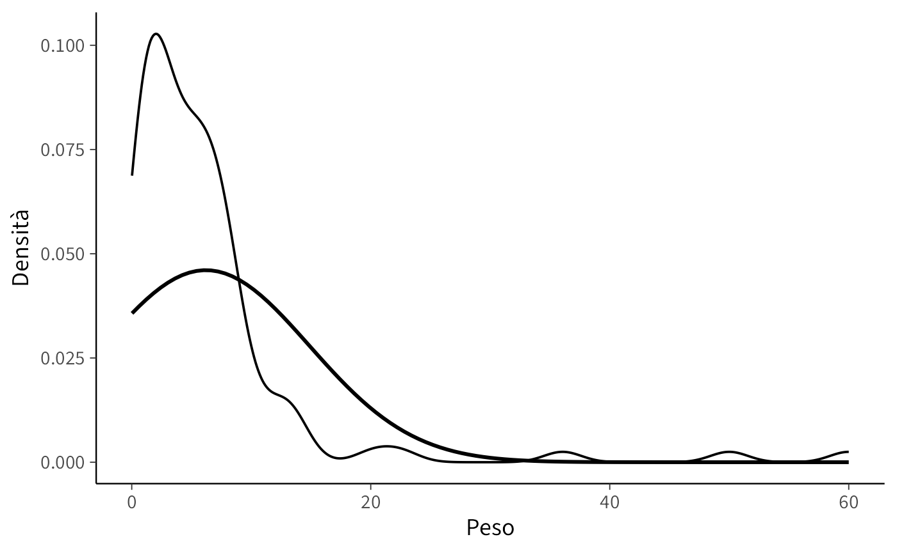
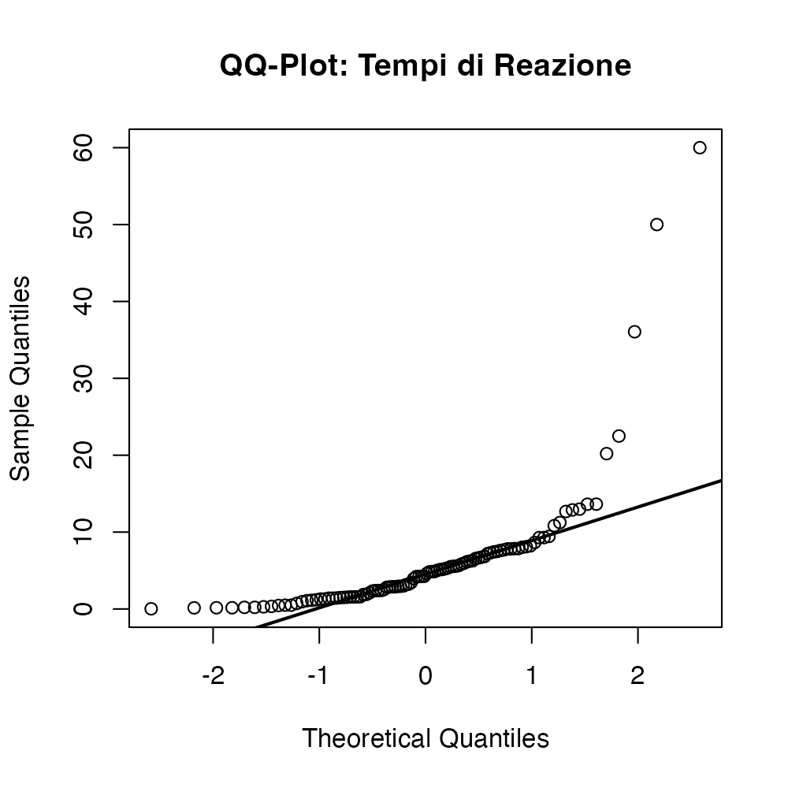
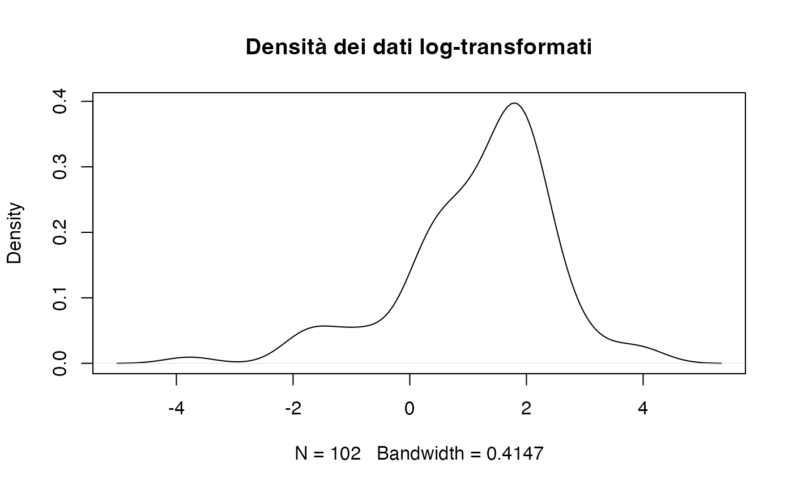
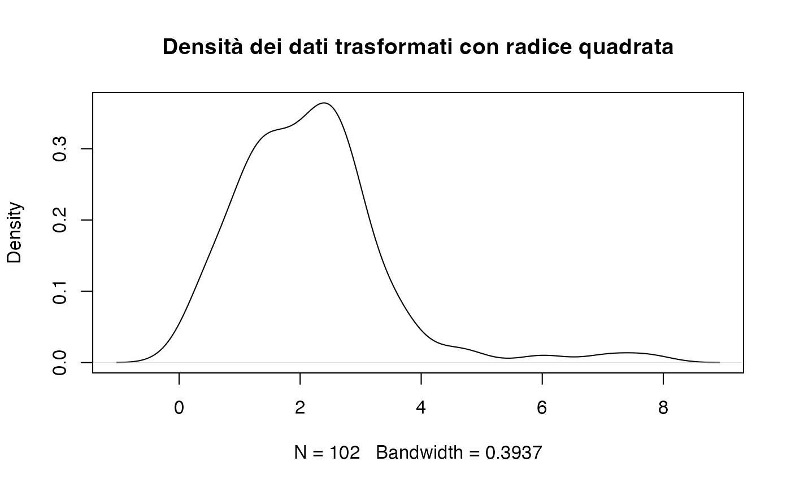
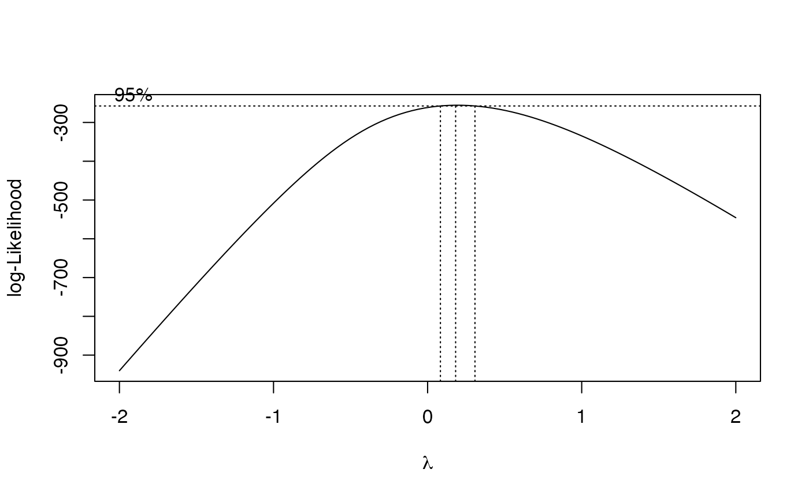
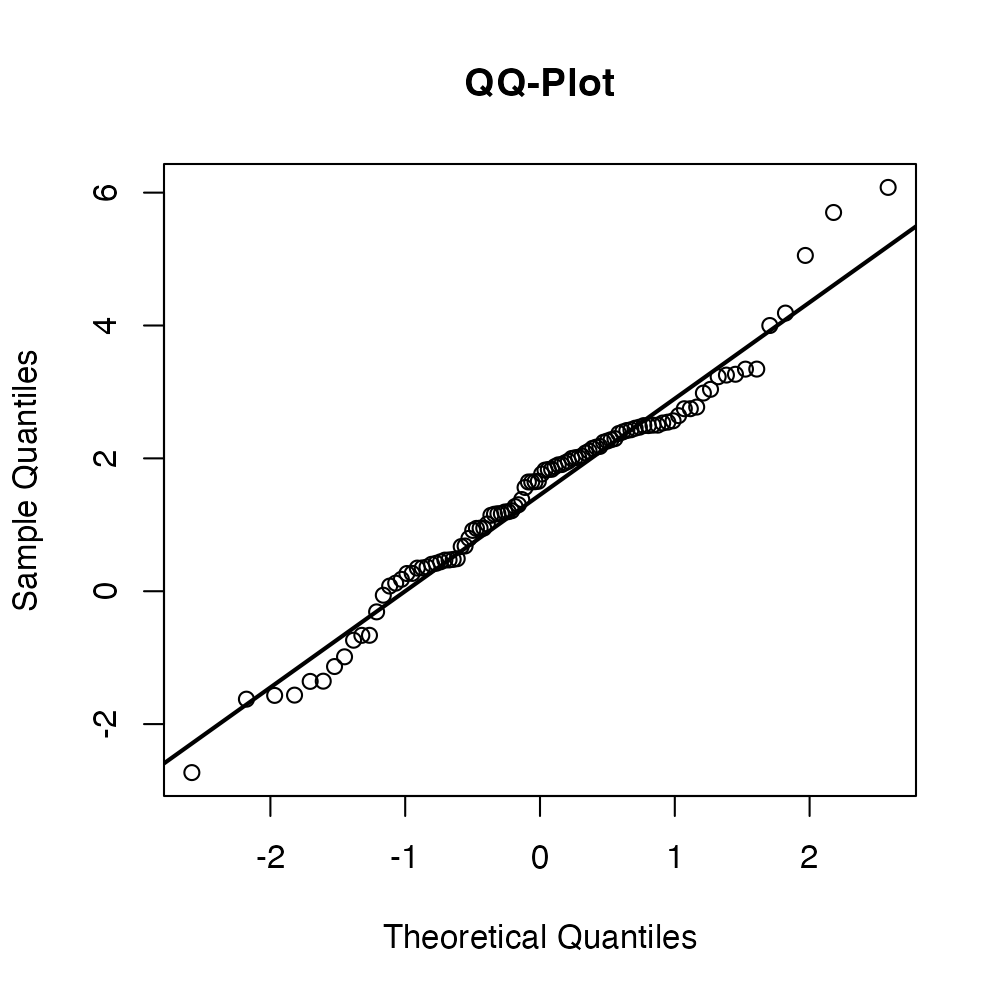

here::here("code", "_common.R") |>
source()
# Load packages
if (!requireNamespace("pacman")) install.packages("pacman")
pacman::p_load(datawizard, MASS)15 Assunzione di gaussianità e trasformazioni dei dati
Introduzione
Ogni misurazione empirica è inevitabilmente soggetta a imprecisione. Anche nelle condizioni più controllate, i dati non sono mai una rappresentazione esatta della realtà: riflettono sempre un margine di errore dovuto ai limiti dello strumento utilizzato, alle fluttuazioni casuali o ai fattori non osservati. In molti ambiti, come le scienze sociali e la psicologia, questa variabilità tende ad aumentare a causa di arrotondamenti, stime indirette o dati incompleti.
Tale variabilità casuale non è un difetto, ma una caratteristica fondamentale dei dati reali. Il compito dell’analisi statistica è descrivere e gestire formalmente questa variabilità. La distribuzione normale, o gaussiana, è uno dei modelli matematici più efficaci per farlo. Quando gli errori di misura derivano da molti piccoli fattori indipendenti, il Teorema del Limite Centrale garantisce che la loro somma tenderà a distribuirsi secondo una curva gaussiana: un risultato notevole che spiega l’onnipresenza della distribuzione normale nelle scienze empiriche.
15.1 Distribuzione normale e errori di misurazione
La distribuzione normale fornisce una rappresentazione quantitativa della concentrazione dei valori attorno alla media. La sua densità di probabilità è descritta da:
\[ p(x) = \frac{1}{\sqrt{2\pi}\,\sigma} \exp\!\left[-\frac{(x-\mu)^2}{2\sigma^2}\right], \tag{15.1}\]
dove \(\mu\) è la media e \(\sigma\) la deviazione standard. La maggior parte dei valori si concentra vicino a \(\mu\), mentre la probabilità di osservare valori estremi diminuisce rapidamente con l’aumentare della distanza dalla media.
Da questa funzione derivano proprietà note e utili:
-
circa il 68.3% dei valori cade entro ±1 deviazione standard dalla media
-
circa il 99.7% entro ±3 deviazioni standard
Queste regolarità definiscono la cosiddetta regola delle tre sigma, spesso utilizzata per individuare valori anomali (outlier). Tuttavia, la sua validità dipende dalla reale gaussianità dei dati.
15.2 Il ruolo della gaussianità nell’inferenza statistica
15.2.1 Nell’approccio frequentista
La distribuzione normale riveste un ruolo centrale nell’approccio frequentista, in quanto molti test di ipotesi (\(t\) di Student, analisi della varianza, regressione lineare) si basano sull’ipotesi che i dati, o almeno i residui del modello, siano normalmente distribuiti. Quando questa condizione è soddisfatta, le stime e gli intervalli di confidenza risultano accurati. Tuttavia, deviazioni marcate dalla normalità possono compromettere la validità dei risultati, in particolare l’interpretazione del valore-\(p\).
Per correggere tali deviazioni, si ricorre spesso a trasformazioni dei dati, come la trasformazione logaritmica o la radice quadrata, che rendono la distribuzione più simmetrica e “gaussiana” (Osborne, 2002). Questa procedura, utile dal punto di vista matematico, comporta però una perdita di interpretabilità: le conclusioni statistiche si riferiscono ai dati trasformati e non più ai valori originali, che possiedono un’interpretazione concreta e direttamente collegata al costrutto teorico misurato.
15.2.2 Gaussianità e inferenza bayesiana
Nel quadro bayesiano, la distribuzione normale conserva un’importanza analoga, ma con una prospettiva più flessibile e concettualmente coerente con l’incertezza.
Prior normali. Nell’inferenza bayesiana, è comune utilizzare distribuzioni normali come prior per parametri continui (ad esempio, medie, coefficienti di regressione). Questo permette di esprimere credenze concentrate attorno a un valore plausibile con un grado di incertezza controllato. La forma analitica della normale rende inoltre i calcoli più trattabili in molti contesti.
Posteriori approssimativamente normali. Una proprietà notevole dell’inferenza bayesiana è che, per il Teorema del Limite Centrale, molte distribuzioni a posteriori tendono ad approssimare una forma normale quando il campione è sufficientemente grande, anche se la prior o la verosimiglianza non lo sono. Questo fenomeno offre una base teorica solida per utilizzare approssimazioni normali anche in situazioni complesse.
Coniugatezza. Nel modello normale-normale (quando sia la prior che la verosimiglianza sono normali), la distribuzione a posteriori è anch’essa normale. Questa proprietà di coniugatezza permette di ottenere soluzioni analitiche esatte senza ricorrere a simulazioni, semplificando notevolmente il processo inferenziale.
Modelli gerarchici. Nella modellazione bayesiana gerarchica, le distribuzioni normali sono spesso utilizzate per rappresentare la variabilità tra individui o gruppi (partial pooling), permettendo di condividere informazione e regolarizzare le stime.
Flessibilità modellistica. A differenza dell’approccio frequentista, il paradigma bayesiano non impone la normalità come requisito per l’inferenza. Se i dati sono asimmetrici o con code pesanti, si possono specificare verosimiglianze alternative (Poisson, gamma, lognormale, \(t\) di Student, miste) preservando la scala e il significato psicologico originale dei dati.
15.2.2.1 Sintesi
La distribuzione normale non è solo una curva elegante, ma un modello fondamentale per comprendere la variabilità intrinseca ai fenomeni naturali e sociali. Nell’approccio frequentista, essa funge da condizione teorica per l’applicabilità dei test, mentre nell’approccio bayesiano, diventa uno strumento flessibile per modellare incertezza, credenze e dipendenze gerarchiche. Comprendere la sua logica significa riconoscere che l’errore non è un difetto da eliminare, ma una forma di informazione che ci permette di quantificare in modo coerente ciò che sappiamo e ciò che resta incerto.
15.3 L’assunzione di gaussianità: quando è valida?
Sebbene la distribuzione normale sia spesso un buon modello per i dati numerici, non è sempre una rappresentazione adeguata. Ciò può dipendere da caratteristiche intrinseche dei dati, quali asimmetrie, code lunghe o la presenza di valori anomali. Valutare l’appropriatezza dell’ipotesi di normalità è un passaggio critico in qualsiasi analisi statistica.
Per diagnosticare la normalità, presenteremo tre strumenti grafici:
- gli istogrammi, una visualizzazione semplice ma spesso limitata;
- i grafici di densità, che forniscono un confronto più fluido rispetto agli istogrammi;
- il QQ-plot (Quantile-Quantile plot), uno strumento visivo particolarmente efficace per rilevare deviazioni dalla normalità.
Questi strumenti possono anche essere affiancati da test formali per consentire una diagnosi robusta e guidare le decisioni sul trattamento dei dati.
15.4 Istogramma
Per illustrare il concetto, utilizziamo un set di dati simulati che presentano proprietà simili a quelle dei tempi di reazione. Creeremo un istogramma e vi sovrapporremo la curva di densità normale calcolata in base ai dati.
# Dati simulati di tempi di reazione
set.seed(123)
rt <- c(rexp(100, rate = 0.2), 50, 60) # Aggiunti valori estremi
# Calcolare la media e la deviazione standard per sovrapporre la densità normale
mean_rt <- mean(rt, na.rm = TRUE)
sd_rt <- sd(rt, na.rm = TRUE)
# Creare l'istogramma e sovrapporre la densità normale
ggplot(tibble(rt=rt), aes(x = rt)) +
geom_histogram(
aes(y = ..density..),
bins = 30, color = "black"
) +
stat_function(
fun = dnorm,
args = list(mean = mean_rt, sd = sd_rt),
size = 1
) +
labs(
x = "Tempi di Reazione",
y = "Densità"
)
L’istogramma mostra la distribuzione empirica dei dati, mentre la curva rossa rappresenta la densità normale con la stessa media e deviazione standard. Nel nostro caso, è evidente una discrepanza tra la distribuzione empirica e la densità normale, il che indica che l’ipotesi di normalità non è appropriata.
15.5 Grafico di densità
Un grafico di densità è una versione lisciata dell’istogramma che facilita il confronto con la distribuzione normale. Utilizzando il dataset precedente, è possibile creare un grafico di densità sovrapposto alla curva gaussiana.
ggplot(tibble(rt=rt), aes(x = rt)) +
geom_density(alpha = 0.5) +
stat_function(
fun = dnorm,
args = list(mean = mean_rt, sd = sd_rt),
size = 1
) +
labs(
x = "Peso",
y = "Densità"
)
Anche questa rappresentazione chiarisce come l’assunzione di normalità non sia appropriata.
15.6 Diagramma quantile-quantile
Il diagramma quantile-quantile (QQ-plot) è lo strumento più utile per analizzare visivamente la conformità di un dataset a una distribuzione teorica, in particolare a quella normale. Il QQ-plot è una tecnica essenziale per chi lavora con dati che si presume seguano una distribuzione specifica e rappresenta un passaggio cruciale in molte analisi statistiche, soprattutto per verificare l’ipotesi di normalità.
Un QQ-plot permette di:
- Valutare graficamente la normalità dei dati: se i punti nel diagramma seguono approssimativamente una linea retta, i dati possono essere considerati normalmente distribuiti. In caso contrario, il QQ-plot rivela deviazioni dalla normalità, come code pesanti o asimmetrie.
- Confrontare distribuzioni: il QQ-plot non si limita solo alla distribuzione normale, ma può essere utilizzato per confrontare la distribuzione del campione con qualsiasi distribuzione teorica, facilitando l’analisi di dati con forme di distribuzione complesse.
- Identificare gli outlier: gli outlier nei dati saranno visibili come punti che si discostano in modo rilevante dalla linea retta del QQ-plot, che rappresenta la distribuzione normale.
Il QQ-plot è costruito tracciando i quantili del campione contro i quantili teorici di una distribuzione di riferimento. L’interpretazione è piuttosto semplice:
- se il campione segue la distribuzione teorica, i punti nel QQ-plot si allineano lungo una linea retta con pendenza 1 (e con intercetta 0 nel caso di distribuzione normale standardizzata);
- deviazioni dalla retta indicano differenze tra la distribuzione dei dati e la distribuzione teorica;
- le code che si discostano dalla retta suggeriscono la presenza di code più pesanti (se i punti si allontanano verso l’alto o verso il basso) o di valori estremi non previsti dalla distribuzione teorica.
15.6.1 Interpretazione del QQ-plot
In questa sezione analizzeremo le deviazioni più comuni dal pattern lineare e cosa suggeriscono riguardo alla distribuzione dei dati.
Esaminiamo questi pattern con maggiore dettaglio attraverso simulazioni di dati con caratteristiche diverse. Questo approccio ci permette di confrontare visivamente i pattern osservati con le proprietà note delle distribuzioni simulate.
15.6.1.1 Distribuzione normale (riferimento)
Iniziamo con i dati estratti da una distribuzione normale. Questo è il caso ideale: i punti dovrebbero allinearsi lungo la retta diagonale.
15.6.1.2 Asimmetria positiva (right-skewed)
Le distribuzioni con asimmetria positiva (code a destra più lunghe) presentano un andamento sistematico: i punti tendono a discostarsi dalla retta nella parte superiore del grafico. Questo pattern è tipico di variabili come i tempi di reazione o i redditi.
15.6.1.3 Asimmetria negativa (left-skewed)
I dati con asimmetria negativa (code a sinistra più lunghe) presentano un andamento opposto: i punti si discostano dalla retta nella parte inferiore del grafico.
15.6.1.4 Code pesanti (heavy tails)
Le distribuzioni con code pesanti, come la distribuzione di \(t\) di Student con pochi gradi di libertà, presentano punti che si discostano dalla retta sia a destra che a sinistra. Questo pattern indica una maggiore probabilità di valori estremi rispetto a una distribuzione normale.
15.6.1.5 Code leggere (light tails)
Al contrario, le distribuzioni con code leggere (come quella uniforme) presentano punti che si avvicinano troppo alla retta agli estremi e si discostano al centro. Ciò indica una minore probabilità di valori estremi rispetto a una distribuzione normale.
15.6.1.6 Presenza di outlier
Quando ci sono outlier, il QQ-plot mostra dei punti isolati che si discostano in maniera rilevante dalla retta diagonale, soprattutto agli estremi del grafico.

15.6.1.7 Distribuzione bimodale
I dati provenienti da una distribuzione bimodale mostrano un pattern a “S” nel QQ-plot, con due regioni curve che corrispondono alle due modalità.

15.6.2 Riepilogo dei pattern nel QQ-plot
La tabella seguente riassume i pattern più comuni osservabili nei QQ-plot e le loro interpretazioni.
| Pattern | Interpretazione |
|---|---|
| Punti lungo la retta | Dati normali |
| Curva verso l’alto a destra | Asimmetria positiva (code a destra) |
| Curva verso il basso a sinistra | Asimmetria negativa (code a sinistra) |
| Punti lontani agli estremi | Code pesanti (outlier o distribuzione t di Student) |
| Punti vicini agli estremi | Code leggere (uniforme) |
| Punti isolati | Presenza di outlier |
| Curva a “S” | Distribuzione bimodale o multimodale |
15.6.3 Esempio pratico: QQ-plot per i dati dei tempi di reazione
Consideriamo i dati dei tempi di reazione simulati in precedenza. Il QQ-plot fornisce un metodo rapido per visualizzare la deviazione dalla normalità:

Il QQ-plot conferma che i tempi di reazione non seguono una distribuzione normale, con evidenti curve sistematiche che suggeriscono un’asimmetria positiva. Un’ispezione visiva di questo tipo è essenziale per decidere se applicare delle trasformazioni o utilizzare dei modelli alternativi.
15.7 Test statistici di normalità
Sebbene i grafici QQ siano strumenti visivi fondamentali per valutare la normalità, esistono anche test statistici formali per verificarla. I test di normalità restituiscono un valore p che rappresenta la probabilità di osservare i dati (o deviazioni più estreme) sotto l’ipotesi che provengano da una distribuzione normale. Se il valore-\(p\) è inferiore a una soglia prefissata (ad esempio, 0.05), l’ipotesi di normalità viene rigettata.
15.7.1 Test di Shapiro-Wilk
Il test di Shapiro-Wilk è uno dei più utilizzati e potenti per valutare la normalità, soprattutto nei campioni di piccole e medie dimensioni.
shapiro.test(rt)
#>
#> Shapiro-Wilk normality test
#>
#> data: rt
#> W = 0.6, p-value = 5e-16Nel nostro esempio, il valore-p molto piccolo (\(p < 0.001\)) indica che i dati non seguono una distribuzione normale.
15.7.2 Test di Kolmogorov-Smirnov
Il test di Kolmogorov-Smirnov confronta la distribuzione empirica dei dati con quella teorica. Anche se meno potente del test di Shapiro-Wilk, è applicabile a campioni di grandi dimensioni.
ks.test(rt, "pnorm", mean = mean_rt, sd = sd_rt)
#>
#> Asymptotic one-sample Kolmogorov-Smirnov test
#>
#> data: rt
#> D = 0.3, p-value = 0.000005
#> alternative hypothesis: two-sided15.7.3 Test di Anderson-Darling
Il test di Anderson-Darling è simile a quello di Kolmogorov-Smirnov, ma attribuisce maggiore importanza alle code della distribuzione, rendendolo più sensibile alle deviazioni estreme.
if (!requireNamespace("nortest", quietly = TRUE)) install.packages("nortest")
nortest::ad.test(rt)
#>
#> Anderson-Darling normality test
#>
#> data: rt
#> A = 11, p-value <2e-1615.7.4 Interpretazione dei Test
Tutti e tre i test confermano che i dati simulati non seguono una distribuzione normale. Tuttavia, come abbiamo discusso in precedenza, i test statistici non devono essere interpretati in modo rigido:
- un valore-\(p\) molto basso (\(p < 0.05\)) suggerisce una deviazione statisticamente significativa dalla normalità, ma questa deviazione potrebbe non avere rilevanza pratica;
- un valore-\(p\) elevato (\(p > 0.05\)) non garantisce che i dati siano perfettamente normali, ma potrebbe semplicemente riflettere una mancanza di potenza del test.
15.8 Trasformazione dei dati: strategie per la non-normalità
Premessa metodologica: le trasformazioni presentate in questo articolo sono uno strumento tipico dell’approccio frequentista, mirato a soddisfare l’assunzione di normalità richiesta da molti test classici. In un’ottica bayesiana, si preferisce generalmente esplorare modelli alternativi che lavorino direttamente sulla scala originale dei dati. Tuttavia, le trasformazioni mantengono la loro utilità quando sono sostanzialmente motivate da esigenze di stabilizzazione della varianza, linearizzazione delle relazioni o coerenza con la teoria di riferimento.
Quando i dati presentano deviazioni marcate dalla normalità, è possibile intervenire con trasformazioni matematiche che ne modifichino la distribuzione, rendendola più simile a una distribuzione gaussiana. Queste trasformazioni preservano la validità delle analisi statistiche che richiedono tale assunzione.
Tra le tecniche più utilizzate per gestire i valori estremi e le asimmetrie, abbiamo:
- il Winsorizing, che sostituisce i valori estremi con i percentili più vicini, preservando la dimensione del campione;
- il trimming, che elimina completamente le osservazioni più estreme, riducendo la dimensione del campione, ma mitigando l’influenza degli outlier.
Consideriamo i seguenti dati di esempio:
dati <- c(
1.0, 2.2, 3.0, 3.1, 4.0, 4.0, 4.1, 5.3, 6.5, 8.3,
10.9, 20.4, 21.4, 34.
)Winsorizing al 20%:
dati_winsorized <- winsorize(
dati,
method = "percentile", percentile = 20
)
print(dati_winsorized)
#> [1] 3.0 3.0 3.0 3.1 4.0 4.0 4.1 5.3 6.5 8.3 10.9 20.4 20.4 20.4Trimming al 20%:
- Dati winsorized: i valori estremi (inferiori e superiori ai percentili 20° e 80°) sono sostituiti dai valori limite;
- Dati trimmed: i valori al di fuori dei percentili 20° e 80° vengono completamente rimossi.
Questi metodi riducono l’impatto degli outlier, ma possono introdurre un bias se i valori estremi fanno effettivamente parte della popolazione di riferimento.
15.9 Trasformazioni comuni
Quando i dati non rispettano l’ipotesi di normalità, è possibile applicare delle trasformazioni matematiche per modificarne la forma e renderli più simili a una distribuzione normale. Di seguito, presentiamo le trasformazioni più utilizzate.
Trasformazione logaritmica.
La trasformazione logaritmica è particolarmente utile per le variabili con asimmetria positiva (code lunghe a destra), come i tempi di reazione.

Trasformazione radice quadrata.
È adatta per variabili di conteggio o proporzioni con valori prossimi a zero.

Trasformazione inversa.
È efficace per i dati con forte asimmetria positiva, ma può complicare l’interpretazione.

Trasformazione Box-Cox.
La trasformazione Box-Cox è una tecnica parametrica che generalizza le precedenti. Utilizza il massimo della verosimiglianza per determinare la trasformazione ottimale per normalizzare i dati. La funzione di trasformazione dipende da un parametro \(\lambda\):
\[ y(\lambda) = \begin{cases} \frac{y^\lambda - 1}{\lambda} & \text{se } \lambda \neq 0, \\ \log(y) & \text{se } \lambda = 0. \end{cases} \]
b <- boxcox(lm(rt ~ 1))
# Exact lambda
lambda <- b$x[which.max(b$y)]
lambda
#> [1] 0.182Trasformiamo i dati utilizzando lambda.
rt_boxcox <- (rt^lambda - 1) / lambda
rt_boxcox |> head()
#> [1] 1.645 1.168 2.261 -1.568 -1.133 0.479
15.9.1 Pro e contro delle trasformazioni
Vantaggi: le trasformazioni dei dati offrono molti benefici nell’analisi statistica. In primo luogo, possono migliorare l’aderenza alla normalità, un requisito fondamentale per l’applicazione di molti test statistici frequentisti. Inoltre, contribuiscono a stabilizzare la varianza e a mitigare l’impatto dei valori estremi, riducendo il rischio che questi ultimi influenzino eccessivamente i risultati. Questi vantaggi migliorano la robustezza e l’accuratezza delle analisi.
Svantaggi: nonostante i benefici, le trasformazioni presentano limitazioni rilevanti. La perdita di interpretabilità è uno degli aspetti più critici: i risultati dei dati trasformati possono risultare meno intuitivi. Ad esempio, in un modello di regressione applicato a dati trasformati con il logaritmo, il coefficiente rappresenta un cambiamento percentuale anziché assoluto, il che rende l’interpretazione meno diretta per chi non è esperto.
Inoltre, l’applicazione di una trasformazione deve essere attentamente motivata in base alla natura dei dati e agli obiettivi dell’analisi. Una trasformazione inappropriata può introdurre distorsioni indesiderate, compromettendo la validità dei risultati e portando a conclusioni fuorvianti. Per questo motivo, è essenziale valutare attentamente i costi e i benefici della trasformazione nel contesto specifico della ricerca.
Riflessioni conclusive
La verifica della normalità dei dati e l’eventuale utilizzo di trasformazioni matematiche sono fasi fondamentali nell’analisi statistica. Sebbene i test formali, come il test di Shapiro-Wilk o il test di Kolmogorov-Smirnov, forniscano una valutazione strutturata, possono risultare troppo sensibili, portando a rigettare l’ipotesi di normalità anche in presenza di lievi deviazioni che non hanno rilevanza pratica. In questi casi, l’uso di strumenti visivi come istogrammi, grafici di densità o QQ-plot si rivela spesso più informativo e flessibile, permettendo di identificare la natura e l’entità delle deviazioni.
Le trasformazioni dei dati sono una strategia utile nell’approccio frequentista per normalizzare la distribuzione e soddisfare le assunzioni richieste dai test classici, ma richiedono una scelta oculata. È essenziale verificare che la trasformazione adottata non comprometta il significato teorico della variabile in esame e l’interpretabilità dei risultati. Quando queste considerazioni diventano problematiche, l’approccio bayesiano offre un’alternativa particolarmente attraente: la specificazione di modelli con verosimiglianze appropriate (Poisson, Gamma, log-normale o \(t\) di Student) consente di analizzare i dati sulla loro scala originale senza forzare la loro distribuzione in una forma normale. Questa flessibilità modellistica permette di mantenere l’interpretabilità dei risultati e di incorporare naturalmente le caratteristiche intrinseche dei dati.
In definitiva, la scelta dell’approccio (trasformazioni frequentiste, metodi robusti o modelli bayesiani flessibili) dipenderà dal contesto di ricerca, dalla natura dei dati e dagli obiettivi analitici. L’importante è sempre privilegiare un equilibrio tra rigore statistico, interpretabilità dei risultati e fedeltà alla struttura intrinseca dei fenomeni studiati.
Bibliografia
Osborne, J. (2002). Notes on the use of data transformations. Practical Assessment, Research, and Evaluation, 8(1).
Shatz, I. (2024). Assumption-checking rather than (just) testing: The importance of visualization and effect size in statistical diagnostics. Behavior Research Methods, 56(2), 826–845.